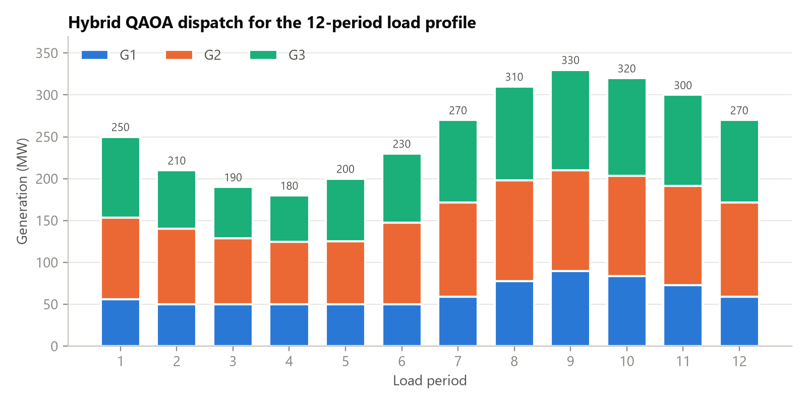
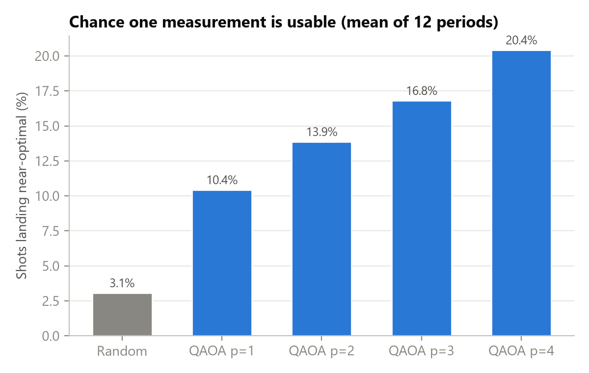
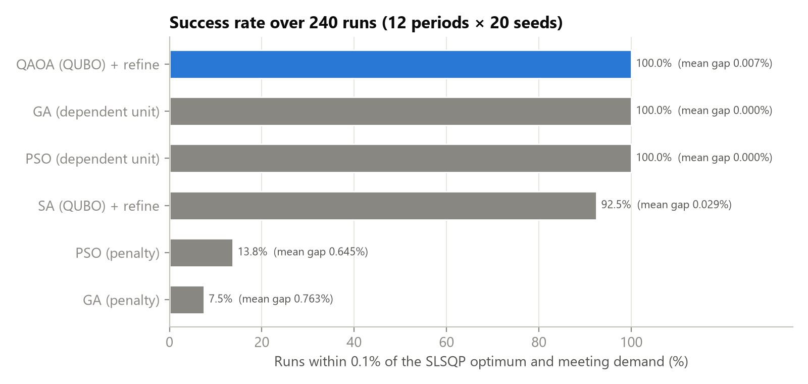
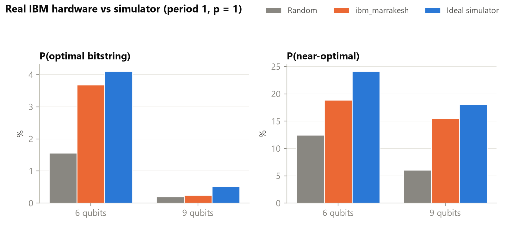
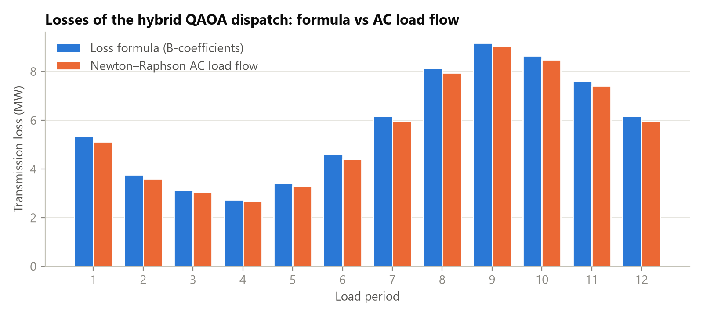

Step 1
The problem: economic load dispatch
A power system has several generators running at once. Demand changes through the day, and every MW from each generator has a different fuel cost. Economic load dispatch (ELD) decides how many MW each generator should produce so that demand is met at the lowest total cost.
Two rules must hold. Total generation must equal demand. And each generator must stay between its minimum and maximum output.
We used the standard 6-bus, 3-generator test system from Wood & Wollenberg's textbook, with data from Prada's PhD thesis (Carnegie Mellon, 2017). Demand is given for 12 periods of a day.
Each generator's cost is a quadratic, C = aP² + bP + c ($/h). G2 is the cheapest per MW and G1 the most expensive, so the best plan leans on G2 and G3 and keeps G1 low.
Step 2
Our approach in six steps
Quantum computers work with bits (qubits), not with MW values. So we turned the dispatch problem into a yes/no problem, let QAOA search it, then converted the answer back to MW and checked it.
- Load the test systemclassicalGenerator costs and limits, demand for each period, line data.
- Encode MW as bitsclassical4 bits per generator, 12 bits in total. Each bit pattern is one possible dispatch.
- Write one cost formula (QUBO)classicalFuel cost plus a penalty that grows if total generation misses the demand.
- Search with QAOAquantumA 12-qubit circuit is trained to make low-cost dispatches likely, then measured 4096 times.
- Decode and fine-tuneclassicalTake the 5 best measured dispatches and adjust each slightly so supply equals demand exactly.
- CheckclassicalCompare with the exact answer and with other algorithms, then test the dispatch on the full electrical network.
Step 3
Turning megawatts into qubits
Each generator gets 4 bits, which gives 16 output levels between its minimum and maximum. Three generators need 12 bits, so there are 2¹² = 4096 possible dispatches. Here is one of them, decoded:
Because every pattern decodes to a value inside the generator's limits, the limits never need checking. Only the demand rule needs handling. We add a penalty, A × (total − demand)², to the fuel cost, so a dispatch that misses the demand looks expensive.
The penalty weight matters. Too small, and the cheapest pattern under-supplies the city. Too large, and cost differences get drowned out. We tried A = 1, 5, 20 and 100 on all 12 periods. A = 20 was the smallest value that kept the mismatch within 0.5 MW.
For the technically curious: QUBO and Ising form
The cost-plus-penalty formula is a QUBO (quadratic unconstrained binary optimisation). Substituting x = (1 − Z)/2 gives an Ising Hamiltonian with 12 single-qubit Z terms and 66 two-qubit ZZ terms. Its lowest-energy state is the cheapest balanced dispatch. We checked that the two forms agree on all 4096 patterns.
Step 4
How QAOA searches the 4096 dispatches
QAOA (Quantum Approximate Optimization Algorithm) starts with all 4096 dispatches equally likely. It then applies layers of quantum gates that raise the chance of measuring cheap, balanced dispatches and lower the chance of bad ones.
- Start equalEvery qubit is put in superposition, so all 4096 dispatches have the same 1-in-4096 chance.
- Apply layersEach layer has a cost part (built from our formula) and a mixing part. We used 1 to 4 layers, called the depth p.
- Tune the anglesA classical optimiser (COBYLA) adjusts each layer's two angles to focus probability on the best 5% of outcomes (CVaR training).
- Measure 4096 timesEach measurement gives one dispatch. Good dispatches now come up far more often than chance.
- Fine-tune the best fiveThe 4-bit levels are 7.5–10 MW apart, so the best pattern rarely hits demand exactly. A classical solver (SLSQP) moves each generator by at most one step to balance supply and demand exactly.
Is the fine-tuning doing all the work? No. It can only move one step from where QAOA landed, so if QAOA picks the wrong region, the answer stays wrong. To keep the comparison fair, we gave exactly the same fine-tuning to the other methods that search the same 4096 patterns.
Step 5
What we compared against, and why
An accuracy number means little alone, so we compared QAOA with the exact answer and with the standard algorithms used for ELD. Each random method was run 20 times per period: 240 runs in total.
| Method | What it is | Why it is in the comparison |
|---|---|---|
| SLSQP | Exact mathematical solver (SciPy) | Gives the true lowest cost. Everything is measured against it. |
| λ-iteration | Textbook equal-incremental-cost method | Independent check that SLSQP's answer is right. |
| Exhaustive search | Tries all 4096 bit patterns | The best any method can do on the same 12-bit problem. |
| Simulated annealing (SA) | Classical search on the same bit patterns | The fairest rival: same problem, same 4096-try budget, same fine-tuning. |
| PSO and GA | Particle swarm and genetic algorithm | The most common heuristics in ELD papers. Tested with a plain penalty and with the dependent-generator method (Gaing, 2003). |
A run counts as a success if its cost is within 0.1% of the true lowest cost and supply equals demand.
Step 6
Results
Is the answer correct?
Yes. QAOA found the best bit pattern in all 12 periods. After fine-tuning, every period meets demand exactly. The largest cost difference from the true optimum is 0.040% ($1.18/h in period 5). Over the whole day, the QAOA plan costs $43,173.88 against the optimum of $43,171.05, just $2.83 more.

That small gap is not QAOA's fault. Checking all 4096 patterns with the same fine-tuning gives exactly the same cost. The gap comes from the 4-bit step size.
Did the quantum part actually help?
Yes. With random guessing, the best pattern comes up 1 time in 4096. After training, QAOA measured it 4.6 times more often at depth 1, rising to 10.2 times at depth 4 (up to 31 times in period 4). A fifth of all measurements (20.4%) were near-optimal, against 3.1% for random guessing.


How does it compare with the other algorithms?
| Method | Average gap | Worst gap | Success (240 runs) | Time per period |
|---|---|---|---|---|
| QAOA + fine-tune (ours) | 0.007% | 0.040% | 100% | 0.28 s* |
| Exhaustive search + fine-tune | 0.007% | 0.040% | 100% | 10 ms |
| Simulated annealing + fine-tune | 0.029% | 0.437% | 92.5% | 71 ms |
| PSO, dependent generator | 0.000% | 0.000% | 100% | 13 ms |
| GA, dependent generator | 0.000% | 0.000% | 100% | 80 ms |
| PSO, penalty | 0.645% | 2.190% | 13.8% | 10 ms |
| GA, penalty | 0.763% | 3.011% | 7.5% | 81 ms |
* On a laptop simulator, after about 22 s of training per period. SLSQP solves a period in about 1 ms.

What this shows. On the same 12-bit problem with the same budget, QAOA matched exhaustive search every time, while simulated annealing missed in 7.5% of runs. PSO and GA reach the exact optimum when they use the dependent-generator method, because they are not limited to 4-bit steps. With a plain penalty they often stop at a worse answer. Every classical method is faster than simulated QAOA.
Step 7
On a real IBM quantum computer
We ran period 1 on ibm_marrakesh, a 156-qubit IBM processor, with 4096 measurements. Real hardware is noisy, so we tested a smaller 6-qubit version (2 bits per generator) and a 9-qubit version (3 bits per generator).
| Version | Two-qubit gates | Best dispatch: random | Real hardware | Ideal simulator | Final cost gap |
|---|---|---|---|---|---|
| 6 qubits | 46 | 1.56% | 3.69% | 4.11% | 0.000% |
| 9 qubits | 144 | 0.20% | 0.24% | 0.53% | 0.254% |

Step 8
Checking the plan on the real network
Basic ELD ignores the transmission lines. So we added line losses to the problem and tested every dispatch with a full AC load flow (Newton–Raphson), the same check a utility would run.
Voltages (1.009–1.070 pu) and reactive power stay within limits. But the load flow found a real problem: line T09, from bus 3 to bus 6, is overloaded in periods 1 and 7–12, reaching 145% of its rating at the 330 MW peak.


The exact classical optimum overloads T09 in the same way (142.7% at the peak). The cause is ELD itself, which does not model line limits, not QAOA. Fixing it needs security-constrained dispatch, our main future-work item.
Step 9
What we conclude
What we showed
- ELD can be written as a 12-qubit problem and solved with QAOA.
- The QAOA plan is within 0.04% of the lowest cost in all 12 periods.
- It is more reliable than simulated annealing on the same problem: 100% against 92.5%.
- The quantum circuit makes the best dispatch up to 31 times more likely than chance.
- It works on a real IBM quantum computer at 6 qubits.
What we did not show
- A speed-up. A normal solver takes 1 ms; simulated QAOA takes about 22 s.
- Large problems on real hardware. Noise takes over at 9 qubits.
- A network-safe dispatch. Line limits need security-constrained dispatch.
For a small, smooth problem like this one, classical methods remain the right tool. QAOA is promising for problems that are yes/no by nature, such as unit commitment (deciding which plants to switch on), where classical methods slow down sharply as systems grow. That, with larger IEEE test systems and error mitigation on hardware, is the next step.